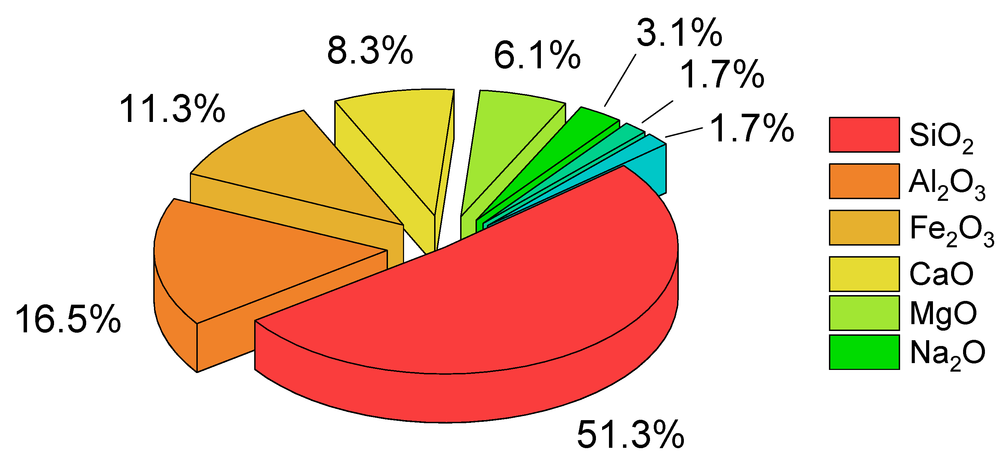

Commonly Referred to as Earth
The upper layer of the Earth’s crust transformed by weathering and physical/chemical and biological processes. It is composed of mineral particles, organicmatter, water, air and living organisms organized in genetic soil horizons.
A typical soil is about 50% solids (45% mineral and 5% organic matter), and 50% voids (or pores) of which half is occupied by water and half by gas.The percent soil mineral and organic content can be treated as a constant (in the short term), while the percent soil water and gas content is considered highly variable whereby a rise in one is simultaneously balanced by a reduction in the other. The pore space allows for the infiltration and movement of air and water, both of which are critical for life existing in soil. Compaction, a common problem with soils, reduces this space, preventing air and water from reaching plant roots and soil organisms. Given sufficient time, an undifferentiated soil will evolve a soil profile which consists of two or more layers, referred to as soil horizons. These differ in one or more properties such as in their texture, structure, density, porosity, consistency, temperature, color, and reactivity. The horizons differ greatly in thickness and generally lack sharp boundaries; their development is dependent on the type of parent material, the processes that modify those parent materials, and the soil-forming factors that influence those processes. The biological influences on soil properties are strongest near the surface, though the geochemical influences on soil properties increase with depth. Mature soil profiles typically include three basic master horizons: A, B, and C. The solum normally includes the A and B horizons. The living component of the soil is largely confined to the solum, and is generally more prominent in the A horizon. It has been suggested that the pedon, a column of soil extending vertically from the surface to the underlying parent material and large enough to show the characteristics of all its horizons, could be subdivided in the humipedon (the living part, where most soil organisms are dwelling, corresponding to the humus form), the copedon (in intermediary position, where most weathering of minerals takes place) and the lithopedon (in contact with the subsoil).
The continued capacity of the soil to function as a vital living system, within ecosystem and land-use boundaries, to sustain biological productivity promote the quality of air and water environments, and maintain plant, animal, and human health.
Description of the significance of soils to humans and the environment. Examples are control of substance and energy cycles within ecosystems, basis for the life of plants, animals and man, basis for the stability of buildings and road, basis for agriculture and forestry, carrier of genetic reservoir, document of natural history, and archaeological and paleoecological document
Occurs when the concentration of a chemical or substance is higher than would occur naturally but is not necessarily causing harm (this volume).
Refers to the presence of a chemical or substance out of place and/or present at higher than normal concentration that has adverse effects on any non-targeted organism.
Synthesized carbon-based compounds from agrochemicals and industrial products that generally biodegrade very poorly and most of which will bioaccumulate in tissues of organisms. Some pesticides are POPs, as are Polychlorinated dibenzodioxins (PCDDs), Polychlorinated dibenzofurans (PCDFs), Polychlorinated biphenyls (PCBs), and Polycyclic aromatic hydrocarbons (PAHs).
The dissolution and movement of dissolved substances by water.
Diffuse pollution is pollution that is spread over very wide areas, accumulates in soil, and does not have a single or easily identified source. Diffuse pollution occurs where emission, transformation and dilution of contaminants in other media have occurred prior to their transfer to soil (FAO and ITPS, 2015). Diffuse pollution involves the transport of pollutants via air‑soil‑water systems. Complex analyses involving these three compartments is therefore needed in order adequately to assess this type of pollution.
Centuries of anthropogenic activities have resulted in a widespread problem of soil pollution around the world. The main anthropogenic sources of soil pollution are the chemicals used in or produced as by‑products of industrial activities, domestic and municipal wastes, including wastewater, agrochemicals, and petrol‑derived products.These chemicals are released to the environment accidentally, for example from oil spills or leaching from landfills, or intentionally, as is the case with the use of fertilizers and pesticides, irrigation with untreated wastewater, or land application of sewage sludge.
Pesticides are applied to reduce crop losses due to insect pests, weeds and pathogens, and thus to guarantee global food supplies. Pesticides include but are not limited to insecticides, fungicides, herbicides, rodenticides, molluscicides, nematicides, and plant growth regulators. Without pesticide use, crop losses have been estimated to vary from 32 percent for cereals to 78 percent in fruit production.